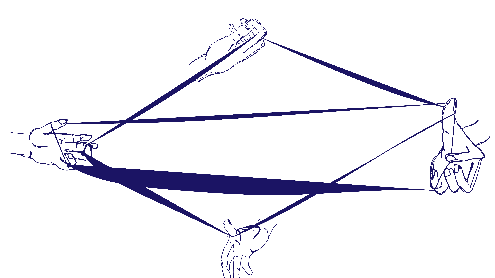

29.12.2024 18:14:24
emmi ist cool
29.12.2024 17:36:50
And what I did know was that the Free Speech Movement mobilized the students into a community, and did that by making cross communications easy as possible. We had a phone room, and that became the prototype of not only the next few years, switchboards, which are these special interest, information referral places, such as would be a phone and a file card box, maybe a bulletin board, but also a prototype of the social internet. It became a place where people could call in to either ask questions or tell people that they’d had an idea, they wanted to do something. And where were there other people who could help? It became a place where people could be connected.
29.12.2024 17:33:50
digital bulletin board we can think of as a computer on a network that allows multiple people to log in and post messages and announcements. Maybe a more recent example of something that’s like this is Craigslist, but you only have a small idea because that was started by a company and these digital bulletin board were really community projects. They had their heyday in the 80s and early 90s, before the World Wide Web really took off with web browsers. But prior to that Community Memory was really the first public bulletin board, a computer terminal that you could visit when you went to your record shop, which of course, was a mandatory activity in the era before streaming, particularly if you wanted to get new music each week. Other times people would go just to check out the flyers on the wall. And in fact, the first Community Memory was set up right next to a wall of flyers, which is how people found each other before the World Wide Web.
29.12.2024 17:16:00
die ist ein neuer test ob die styles nun auf die posts angewendet werden
29.12.2024 17:07:12
ich poste jetzt direkt aus dem terminal und bin gespannt ob das jetzt direkt auf der seite landet
29.12.2024 14:19:52
Hallo Welt!